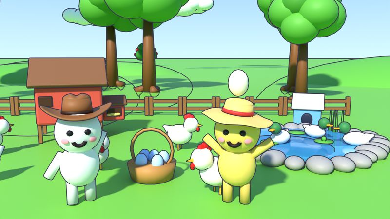
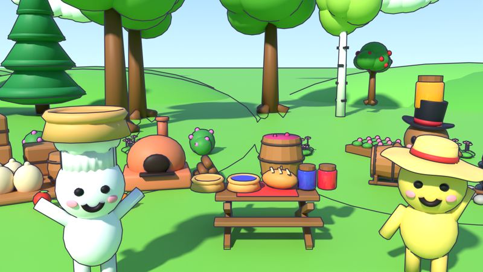
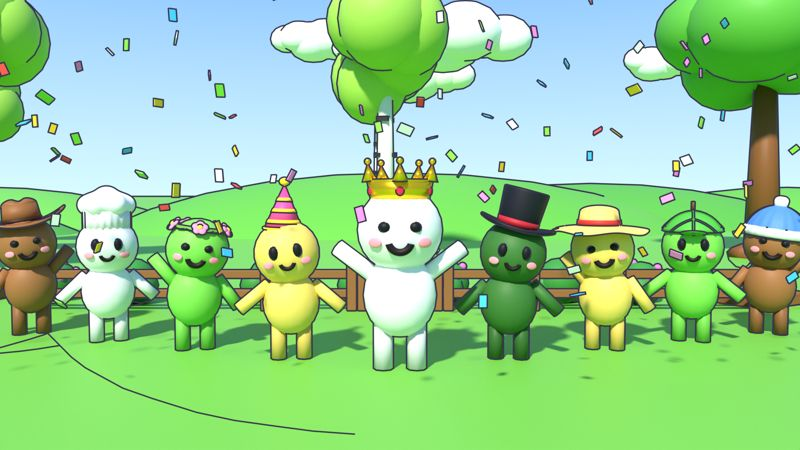

What it does
1
We make a short video
A 15–40 second clip of Farm Buddies: new features, devlogs and cozy moments from the game, with our own music and voice-over.
2
We check it
Every video is reviewed by our team in a private channel before it goes anywhere.
3
It gets posted
At the time we picked, the tool uploads the video to our own TikTok account and YouTube channel.
Only our own accounts. Farm Buddies Autopost is an internal tool of Cloud Thieves Studio. It is not offered to the public, nobody else can sign in with it, and it never reads or stores data about other TikTok or YouTube users.
See our Privacy Policy and Terms of Service.
About Farm Buddies
Farm Buddies is a cozy farming game on Roblox by Cloud Thieves Studio. You place seeds and a crowd of cute buddies plants, waters, harvests and carries everything for you. Cook pies, jam and juice, keep chickens, ducks and bees, collect hats and decorate the coziest farm in the server.


